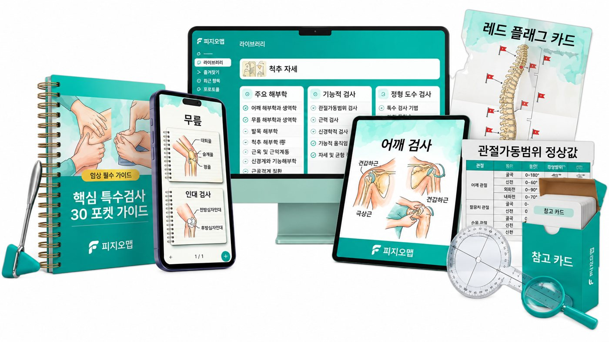
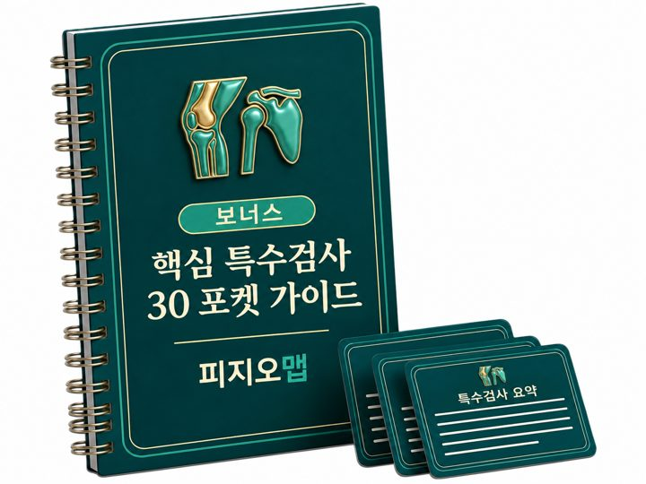
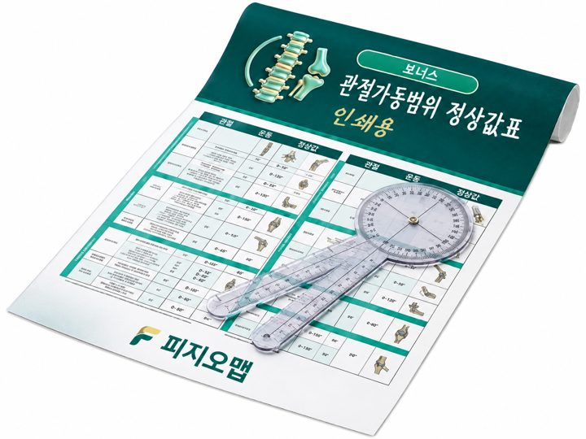
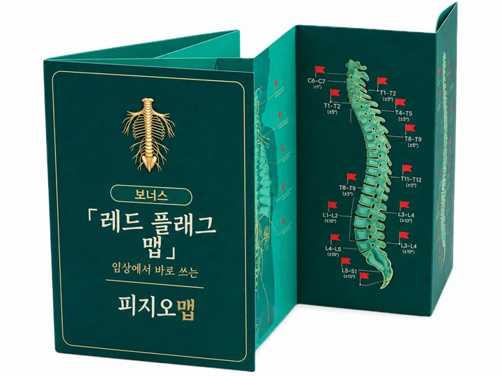

피지오맵 · 평가부터 재활까지 54개 주제·160페이지 이상의 비주얼 맵 · 무료 보너스 3종
평가부터 재활까지, 물리치료를 비주얼 맵과 오래 기억에 남는 복습으로 익혀요. 앱은 스마트폰에서도 PC에서도 이 페이지에서 언제든 열 수 있어요.

54주제
201페이지(PDF 버전)
324확인 문제
📱피지오맵 앱 열기
54개 주제의 비주얼 맵, 모든 검사·질환의 팩트 시트, 페이지마다 확인 문제 2개, 기억 모드(라이트너 방식), 기초·중급·임상 3단계 레벨, 연속 학습일·포인트·숙련도·업적 배지까지.
앱 열기 › 📄PDF 버전(다운로드·인쇄)전체 54개 주제·201페이지. 비주얼 맵, 팩트 시트, 임상 포인트, 확인 문제, 책 끝 부록에 정답과 해설까지.
PDF 열기 · 24.5 MB무료 보너스 3종

보너스 1포켓 가이드: 핵심 특수검사 30
시험과 임상실습에 자주 나오는 특수검사 30개를 방법·양성의 의미·평가 조직과 함께 정리했어요. 포켓 사이즈(A6).
PDF 열기·저장 · 33페이지 · 0.7 MB
보너스 2인쇄용 관절가동범위 정상값표
어깨부터 발목관절까지 모든 관절의 참고 가동범위를 표로 정리했어요. 오른쪽·왼쪽 측정값도 적을 수 있어요(A4·2페이지).
PDF 열기·저장 · 2페이지 · 0.3 MB
보너스 3한눈에 보는 레드 플래그
통증이 기계적인 문제가 아니라 의사의 평가가 필요할 수 있는 신호를 부위별로 한 장에 담았어요(A4 가로).
PDF 열기·저장 · 1페이지 · 0.3 MB시작하는 법
- 앱을 홈 화면에 추가하기앱을 연 뒤 브라우저의 공유 메뉴에서 「홈 화면에 추가」를 누르세요. 다음부터는 한 번만 탭하면 열려요.
- 주제 1부터 읽고 2문제 풀기각 주제는 3페이지(비주얼 맵·팩트 시트·임상 포인트)로 구성돼요. 페이지마다 끝에 2문제가 있어요.
- 매일 「기억 모드」 한 번틀린 문제는 다음 날, 맞힌 문제는 간격을 두고 자동으로 다시 출제돼요.
- 보너스를 인쇄해 가까이 두기포켓 가이드는 가운 주머니에, 가동범위표와 레드 플래그는 치료대 옆에 두세요.
NEXT STEP다음 단계
오늘 앱에서 주제 1 「운동면과 운동축」을 열고 첫 2문제를 풀어 보세요. 10분이면 주제 하나를 끝낼 수 있어요.
물리치료를 공부하는 학생과 전문가를 위한 학습·참고용 교재입니다. 자격을 갖춘 의료 전문가의 평가를 대신하지 않습니다. 학습 기록은 사용하는 기기의 브라우저에 저장됩니다(기기마다 따로 기록됩니다). 이 페이지에는 구매 후 받은 이메일의 링크로 언제든 다시 들어올 수 있으며, 별도 로그인은 필요 없습니다.